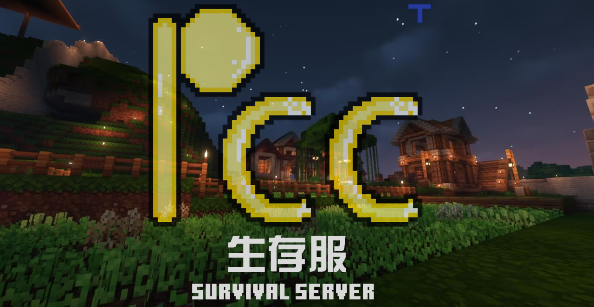
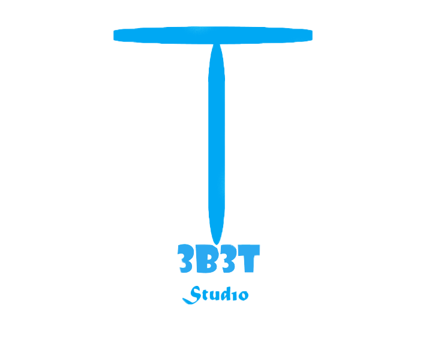

沿着河岸，慢慢走 02 / 04
在方块世界里，
在方块世界里，
留下值得记住
的时光。
一座爬满藤蔓的石桥，一盏等你归来的灯。那些亲手搭起的方块，慢慢成了熟悉的风景。
河畔 · 石桥 · 我们的日常
每一座建筑，都有人在创造 03 / 04
从一个方块，
从一个方块，
到共同的世界。
在擂台相逢，在信标下集结。探索、建设、交流，让每个人的想法在这里留下轮廓。
交叉剑擂台 · 信标塔
关于 PCC
在方块世界里，留下值得记住的时光
PlayChessClub 是一个温馨、和谐的 Minecraft 服务器。从疫情开始到结束，PCC 已陪伴大家走过近五年时光。
我们坚持公益运营。无论是否赞助，每位玩家都可以和大家一起探索、建设与交流。

社区活动
新年活动展示
看看 PCC 玩家共同度过的特别时刻。
实时信息
服务器状态
PCC 动态
新闻速览
获取服务器公告、活动与社区最新消息。
正在加载最新消息…
方块世界
风景欣赏
从宣传海报到玩家建筑，每一张图都记录着 PCC 的成长。
创作与维护
3B3T 工作室
PlayChessClub 官网及相关内容由 3B3T 工作室维护。
